At a glance
An automated pipeline that turns a theme like "Cute Jungle Animals, ages 4–8, 15 pages" into a complete, marketplace-ready coloring book. It covers planning, image generation, automated QA, layout, cover, print PDFs and listing copy.
Overview
Coloring Book Factory is a full production system for self-publishers who sell on Amazon KDP, Etsy, Gumroad and Shopify. Instead of generating a few images and leaving the rest to the creator, it runs the whole workflow a human publisher would, and it keeps a traceable record of every generation.
It is built to be free-tier first. It runs fully offline with mock providers and uses Cloudflare Workers AI (FLUX-1-schnell) within the free daily allowance for live generation. Paid providers are supported but disabled unless explicitly enabled.
The problem
Making a print-ready children's coloring book by hand takes days. The work includes:
- concepts and a page plan
- line art and cleanup
- margins, page numbers and front matter
- a cover with a correctly sized spine
- print and digital PDFs
- SEO-friendly marketplace listings
Generic AI image tools produce single images, not a book that passes print requirements, is consistent from page to page, and suits young children.
The solution
A single service layer drives three interfaces: a React web app, a REST API and a CLI. A book moves through this pipeline:
concept → page plan → prompts → images → automated QA → auto-retry → page composition → cover → print & digital PDFs → previews → marketplace metadata → verified ZIP export
Mechanical QA acts as a rejection filter, not the goal: final quality is judged visually. Pages that fail are marked NEEDS_REVIEW; they are never silently dropped.
Key features
Planning
- An LLM-generated "Book Bible" covering title, art direction, complexity rules, prohibited content and cover palette, plus a Character Bible for recurring characters
- A structured page plan with a similarity engine that rewrites near-duplicate pages
Generation
- A programmatic prompt builder that combines base style, page content, age rules, print rules and a negative prompt, under a hard 2,048-character budget so prompts are never silently truncated
- Immutable generation attempts, with per-call cost and usage tracking, daily limits and a safety margin on the free allowance
- An experimental two-stage workflow: a FLUX flat-colour source image is passed to a local ink line-art renderer
Quality assurance
- 13 mechanical checks, perceptual-hash duplicate detection and colourable-region analysis
- Shape-aware classification of tiny regions (intentional detail vs fragment or sliver) and composition metrics
- Automatic retries with targeted corrections for each failed check
Publishing
- Title page, copyright page, "This Book Belongs To" page, instructions, blank reverses and page numbers
- A cover with composited title, badges and a spine sized from a paper-caliper table
- A 300 DPI print interior PDF, a digital PDF and an automated preflight report
- Marketplace metadata for KDP, Etsy, Gumroad and Shopify with SEO guards, and a verified
COMPLETE.zipexport
How it works
A database-backed job queue runs the pipeline stages on worker threads, so jobs can be resumed and cancelled. Each stage saves immutable artifacts: prompt, seed, cost and raw bytes. Any page can be traced back to exactly how it was produced.

Tech stack
| Layer | Technologies |
|---|---|
| Backend | Python 3.12+, FastAPI, Uvicorn, Pydantic v2 |
| Data | SQLAlchemy 2.0, Alembic, SQLite (default) / PostgreSQL |
| Jobs | DB-backed resumable job queue with worker threads |
| Imaging | Pillow, NumPy, OpenCV (headless) |
| ReportLab, PyMuPDF | |
| Frontend | React 18, TypeScript, Vite, react-router |
| AI providers | Cloudflare Workers AI (FLUX-1-schnell), OpenRouter; optional HuggingFace, ComfyUI, OpenAI, fal, Replicate |
| Testing | pytest (~486 backend tests), ruff, Vitest, Testing Library, Playwright |
| Infra | Docker, docker-compose, nginx |
Engineering highlights
- Pluggable provider registries for image, LLM and vision providers, so the pipeline runs identically in mock, free and paid modes.
- Cost governance: per-call usage tracking, daily limits and a 90% safety factor on the free allowance, with paid providers refused unless explicitly enabled.
- Immutable, traceable generations: every attempt keeps its prompt, seed, cost and raw bytes.
- Prompt budget enforcement (
fit_blocks), so critical rules are never lost to provider truncation. - Computer-vision QA: region analysis, perceptual hashing, tiny-region shape classification and composition metrics.
- Print-correct output: 300 DPI interiors, spine width from paper caliper, and automated preflight.
- One service layer shared by the CLI, REST API and web UI, backed by about 486 backend tests.
Challenges & what I learned
- Passing QA is not the same as looking professional. Direct FLUX line art came out fragmented, and prompting for simpler lines produced crude doodles. Approach: I ran a structured 35-iteration research programme comparing models, a region-graph renderer and a two-stage renderer. Lesson: metrics should reject bad output, while humans judge good output. A page with excellent metrics can still look amateur.
- Preserving eyes and fine features. Eyes merged into the outline network during rendering. Approach: I added an eye-pair survey that rejects weak source images before the expensive render step. Lesson: cheap, early gates save compute and iteration time.
- Mid-tone areas rendering as solid black. Approach: ongoing renderer work, checked against a user-approved reference page and staged visual gates. Lesson: keep an approved visual reference and a regression corpus when tuning subjective output.
- Staying free at scale. Approach: immutable caching, usage accounting and a scheduler that respects daily limits. Lesson: cost is a design constraint, not an afterthought.
Status & what's next
The planning-to-export pipeline is built and tested, in mock mode and with free Cloudflare generation. Current R&D focuses on art quality with the two-stage renderer. Next steps:
- promote the two-stage workflow once it passes a multi-subject visual gate
- add human-in-the-loop page review in the UI
- add activity and puzzle book types (mazes, dot-to-dot, tracing) and personalised books